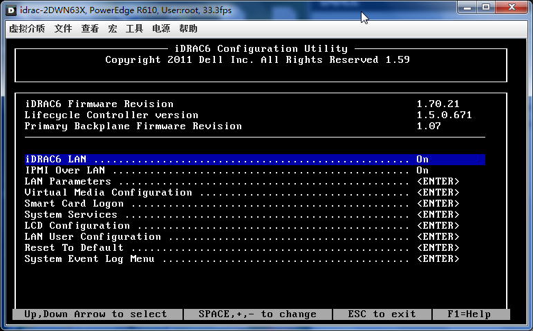
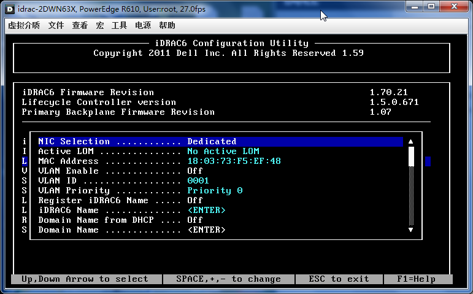

目录
 |
|  |
|  |
 |
我一般不再iDRAC中配置密码，因为我的密码比较复杂，输入起来比较麻烦。
比习惯使用 ipmitool set password 2 password "0KXcHhqPHXg7PrQ9" 设置比较复杂的密码。
登陆Linux服务器使用ipmitool命令行修改drac密码
ipmitool user list [channel number] # 列举用户及用户ID ipmitool user set password [user id] [password] # 更改密码
/sbin/service ipmi start [root@NJ-40 ~]# ipmitool user list 2 ID Name Enabled Callin Link Auth IPMI Msg Channel Priv Limit 2 root true true true true ADMINISTRATOR ipmitool set password 2 password "chen" #dell 1950用法 ipmitool set password 2 "chen" #dell 2950用法,去掉后一个password关键字
FreeBSD
cd /usr/ports/sysutils/ipmitool make install kldload ipmi ipmitool user set password 2 "chen"